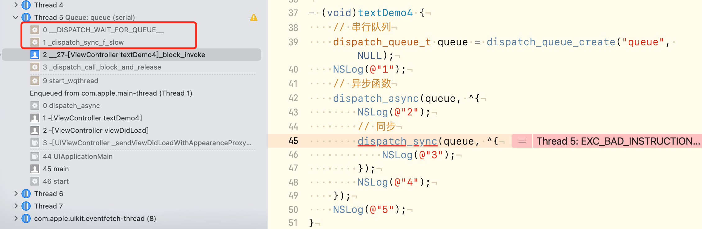

dispatch_async异步函数的调用 我们继续上一章的内容继续研究一下block的调用，在NSlog这里打一个断点，看看调用的函数栈。
1 2 3 dispatch_async(conque, ^{ NSLog(@"12334"); });
我们运行代码，通过bt命令看一下调用栈：
1 2 3 4 5 6 7 8 9 10 11 (lldb) bt * thread #8, queue = 'conque', stop reason = breakpoint 2.1 * frame #0: 0x0000000103abd0d7 __29-[ViewController viewDidLoad]_block_invoke(.block_descriptor=0x0000000103ac00e8) at ViewController.m:48:9 frame #1: 0x0000000103d2e7ec libdispatch.dylib`_dispatch_call_block_and_release + 12 frame #2: 0x0000000103d2f9c8 libdispatch.dylib`_dispatch_client_callout + 8 frame #3: 0x0000000103d32316 libdispatch.dylib`_dispatch_continuation_pop + 557 frame #4: 0x0000000103d3171c libdispatch.dylib`_dispatch_async_redirect_invoke + 779 frame #5: 0x0000000103d41508 libdispatch.dylib`_dispatch_root_queue_drain + 351 frame #6: 0x0000000103d41e6d libdispatch.dylib`_dispatch_worker_thread2 + 135 frame #7: 0x00007fff60c8e453 libsystem_pthread.dylib`_pthread_wqthread + 244 frame #8: 0x00007fff60c8d467 libsystem_pthread.dylib`start_wqthread + 15
从下往上看哈~函数的调用竟然是通过与pthread交互之后发生的。然后到了_dispatch_worker_thread2：
1 2 3 4 5 6 7 8 9 10 11 12 13 14 15 16 17 18 19 20 21 static void _dispatch_worker_thread2(pthread_priority_t pp) { bool overcommit = pp & _PTHREAD_PRIORITY_OVERCOMMIT_FLAG; dispatch_queue_global_t dq; pp &= _PTHREAD_PRIORITY_OVERCOMMIT_FLAG | ~_PTHREAD_PRIORITY_FLAGS_MASK; _dispatch_thread_setspecific(dispatch_priority_key, (void *)(uintptr_t)pp); dq = _dispatch_get_root_queue(_dispatch_qos_from_pp(pp), overcommit); _dispatch_introspection_thread_add(); _dispatch_trace_runtime_event(worker_unpark, dq, 0); int pending = os_atomic_dec2o(dq, dgq_pending, relaxed); dispatch_assert(pending >= 0); _dispatch_root_queue_drain(dq, dq->dq_priority, DISPATCH_INVOKE_WORKER_DRAIN | DISPATCH_INVOKE_REDIRECTING_DRAIN); _dispatch_voucher_debug("root queue clear", NULL); _dispatch_reset_voucher(NULL, DISPATCH_THREAD_PARK); _dispatch_trace_runtime_event(worker_park, NULL, 0); }
根据函数调用栈，来到_dispatch_root_queue_drain这个函数。函数内容做了删减。
1 2 3 4 5 6 7 8 9 10 11 12 13 14 15 16 17 18 19 20 21 22 23 24 25 26 27 28 29 30 31 32 33 34 static void _dispatch_root_queue_drain(dispatch_queue_global_t dq, dispatch_priority_t pri, dispatch_invoke_flags_t flags) { ... // 设置当前queue _dispatch_queue_set_current(dq); _dispatch_init_basepri(pri); _dispatch_adopt_wlh_anon(); struct dispatch_object_s *item; bool reset = false; dispatch_invoke_context_s dic = { }; #if DISPATCH_COCOA_COMPAT _dispatch_last_resort_autorelease_pool_push(&dic); #endif // DISPATCH_COCOA_COMPAT _dispatch_queue_drain_init_narrowing_check_deadline(&dic, pri); _dispatch_perfmon_start(); while (likely(item = _dispatch_root_queue_drain_one(dq))) { if (reset) _dispatch_wqthread_override_reset(); // 函数重点 _dispatch_continuation_pop_inline(item, &dic, flags, dq); reset = _dispatch_reset_basepri_override(); if (unlikely(_dispatch_queue_drain_should_narrow(&dic))) { break; } } ... _dispatch_reset_wlh(); _dispatch_clear_basepri(); // 设置当前queue为NULL _dispatch_queue_set_current(NULL); }
这个函数内一开始需要将当前队列调回来，然后执行block中的内容，完成之后，在把对列置空。block内部怎么调用，就在_dispatch_continuation_pop_inline里头。
1 2 3 4 5 6 7 8 9 10 11 12 13 14 15 16 static inline void _dispatch_continuation_pop_inline(dispatch_object_t dou, dispatch_invoke_context_t dic, dispatch_invoke_flags_t flags, dispatch_queue_class_t dqu) { dispatch_pthread_root_queue_observer_hooks_t observer_hooks = _dispatch_get_pthread_root_queue_observer_hooks(); if (observer_hooks) observer_hooks->queue_will_execute(dqu._dq); flags &= _DISPATCH_INVOKE_PROPAGATE_MASK; if (_dispatch_object_has_vtable(dou)) { dx_invoke(dou._dq, dic, flags); } else { _dispatch_continuation_invoke_inline(dou, flags, dqu); } if (observer_hooks) observer_hooks->queue_did_execute(dqu._dq); }
我们猜测有可能执行的是_dispatch_continuation_invoke_inline，因为其他的看着也不咋像那回事。
1 2 3 4 5 6 7 8 9 10 11 12 13 14 15 16 17 18 19 20 21 22 23 24 25 26 27 28 29 30 static inline void _dispatch_continuation_invoke_inline(dispatch_object_t dou, dispatch_invoke_flags_t flags, dispatch_queue_class_t dqu) { dispatch_continuation_t dc = dou._dc, dc1; dispatch_invoke_with_autoreleasepool(flags, { uintptr_t dc_flags = dc->dc_flags; _dispatch_continuation_voucher_adopt(dc, dc_flags); if (!(dc_flags & DC_FLAG_NO_INTROSPECTION)) { _dispatch_trace_item_pop(dqu, dou); } if (dc_flags & DC_FLAG_CONSUME) { dc1 = _dispatch_continuation_free_cacheonly(dc); } else { dc1 = NULL; } if (unlikely(dc_flags & DC_FLAG_GROUP_ASYNC)) { // 这个可能跟group有关 _dispatch_continuation_with_group_invoke(dc); } else { // 应该会执行这个 _dispatch_client_callout(dc->dc_ctxt, dc->dc_func); _dispatch_trace_item_complete(dc); } if (unlikely(dc1)) { _dispatch_continuation_free_to_cache_limit(dc1); } }); _dispatch_perfmon_workitem_inc(); }
dispatch_invoke_with_autoreleasepool这里有一个autoreleasepool，源码内部对自动释放池的操作还是很严谨的。
这里先看看_dispatch_client_callout。
1 2 3 4 5 6 7 8 9 10 11 12 void _dispatch_client_callout(void *ctxt, dispatch_function_t f) { _dispatch_get_tsd_base(); void *u = _dispatch_get_unwind_tsd(); // 执行这里 if (likely(!u)) return f(ctxt); _dispatch_set_unwind_tsd(NULL); f(ctxt); _dispatch_free_unwind_tsd(); _dispatch_set_unwind_tsd(u); }
看到了木有啊，f还记得是啥吗？回到上一章的这个_dispatch_continuation_init的函数中，有解释哦，f就等于_dispatch_call_block_and_release。
我们再回过头看看打印的函数调用栈，最后执行的不就是_dispatch_call_block_and_release吗？前面的dispatch_asyn内部实现对block进行保存，这里进行调用。
到此为止整个异步函数的调用就结束了。
结合上一章的dispatch_async的内容，我们可以通过汇编添加symbolic breakpoint进行判断，我们所分析的函数执行步奏是否正确，在不知道执行流程的情况下，添加断点可以让我们比较清楚的知道其内部是怎么执行的。这里就不去操作了哈~
dispatch_once 1 2 3 4 static dispatch_once_t onceToken; dispatch_once(&onceToken, ^{ NSLog(@"once ..."); });
我们使用dispatch_once都是这么写，经常用于创建单利或者只执行一次的代码。接下来看看其内部实现。
1 2 3 4 5 6 7 8 9 10 11 12 13 14 15 #define dispatch_once _dispatch_once void _dispatch_once(dispatch_once_t *predicate, DISPATCH_NOESCAPE dispatch_block_t block) { if (DISPATCH_EXPECT(*predicate, ~0l) != ~0l) { // 调用这个 dispatch_once(predicate, block); } else { // 栅栏函数 dispatch_compiler_barrier(); } DISPATCH_COMPILER_CAN_ASSUME(*predicate == ~0l); }
在这个函数内部会通过条件判断执行栅栏函数还是，调用dispatch_once;
1 2 3 4 5 6 7 8 9 10 11 @param val A pointer to a dispatch_once_t that is used to test whether the block has completed or not. @param block The block to execute once. void dispatch_once(dispatch_once_t *val, dispatch_block_t block) { dispatch_once_f(val, block, _dispatch_Block_invoke(block)); }
这里有两个相关参数的介绍，
val：是一个指针，用来判断block执行完成与否。
block：只执行一次的block块
之后就到了dispatch_once_f方法。
1 2 3 4 5 6 7 8 9 10 11 12 13 14 15 16 17 18 19 20 21 22 23 24 25 26 27 28 29 30 void dispatch_once_f(dispatch_once_t *val, void *ctxt, dispatch_function_t func) { // 1. dispatch_once_gate_t结构体 dispatch_once_gate_t l = (dispatch_once_gate_t)val; // 2.真机的情况下，是arm64，DISPATCH_ONCE_INLINE_FASTPATH = 0， // DISPATCH_ONCE_USE_QUIESCENT_COUNTER = 0 #if !DISPATCH_ONCE_INLINE_FASTPATH || DISPATCH_ONCE_USE_QUIESCENT_COUNTER // 3. 所以执行这里，进行原子类型的加载，就是判断是否执行过 uintptr_t v = os_atomic_load(&l->dgo_once, acquire); if (likely(v == DLOCK_ONCE_DONE)) { return; } // 4. 不会执行 #if DISPATCH_ONCE_USE_QUIESCENT_COUNTER if (likely(DISPATCH_ONCE_IS_GEN(v))) { return _dispatch_once_mark_done_if_quiesced(l, v); } #endif #endif // 5. 条件判断是否执行， if (_dispatch_once_gate_tryenter(l)) { // 6. return _dispatch_once_callout(l, ctxt, func); } // 7. 等待 return _dispatch_once_wait(l); }
我们分析一下这个代码：
dispatch_once_gate_t是一个结构体，内部有两个变量dispatch_gate_s dgo_gate是一个锁，uintptr_t dgo_once是否执行过。
arm64判断。
原子类型的加载，判断当前block块是否执行过，已经执行则return。
arm64下DISPATCH_ONCE_USE_QUIESCENT_COUNTER=0
条件判断，是否执行过，其内部实现如下：
1 2 3 4 5 6 static inline bool _dispatch_once_gate_tryenter(dispatch_once_gate_t l) { return os_atomic_cmpxchg(&l->dgo_once, DLOCK_ONCE_UNLOCKED, (uintptr_t)_dispatch_lock_value_for_self(), relaxed); }
通过os_atomic_cmpxchg函数比较，在这个锁_dispatch_lock_value_for_self下判断&l->dgo_once, DLOCK_ONCE_UNLOCKED是否相同。不相同执行6._dispatch_once_callout，否则执行7.
_dispatch_once_callout这个函数内部调用的是_dispatch_client_callout之前已经讲过，就是执行block的内容。
1 2 3 4 5 6 7 8 9 static void _dispatch_once_callout(dispatch_once_gate_t l, void *ctxt, dispatch_function_t func) { // 执行block _dispatch_client_callout(ctxt, func); // &l->dgo_once赋值，标记已执行 _dispatch_once_gate_broadcast(l); }
接下来看一下是如何标记的：
1 2 3 4 5 6 7 8 9 10 11 12 13 14 15 16 17 static inline void _dispatch_once_gate_broadcast(dispatch_once_gate_t l) { // 首先获取self的一个锁 dispatch_lock value_self = _dispatch_lock_value_for_self(); uintptr_t v; // arm64下不会执行这个 #if DISPATCH_ONCE_USE_QUIESCENT_COUNTER v = _dispatch_once_mark_quiescing(l); #else // 执行这里 v = _dispatch_once_mark_done(l); #endif // 判断锁是不是自己，是就return if (likely((dispatch_lock)v == value_self)) return; _dispatch_gate_broadcast_slow(&l->dgo_gate, (dispatch_lock)v); }
我们在看一下_dispatch_once_mark_done内部实现：
1 2 3 4 5 static inline uintptr_t _dispatch_once_mark_done(dispatch_once_gate_t dgo) { return os_atomic_xchg(&dgo->dgo_once, DLOCK_ONCE_DONE, release); }
用这个函数os_atomic_xchg去改变dgo_once的值。
_dispatch_once_wait函数内部是一个for (;;)的死循环，会一直等待dispatch_once的执行，执行完成之后os_atomic_rmw_loop_give_up(return)，不在阻塞线程。
这就是dispatch_once的整个流程。使用了一个dgo_once变量来标记是否执行过:
没有执行则去执行block，并标记dgo_once
执行过，直接返回
正在执行，则等待block执行完成。
栅栏函数 先看栅栏函数的代码演示
1 2 3 4 5 6 7 8 9 10 11 12 13 14 15 16 17 18 19 20 21 - (void)barrierDemo { // 创建一个并发队列 dispatch_queue_t concurrentQueue = dispatch_queue_create("concurrent", DISPATCH_QUEUE_CONCURRENT); // dispatch_queue_t concurrentQueue = dispatch_get_global_queue(0, 0); /* 1. 异步函数 */ dispatch_async(concurrentQueue, ^{ NSLog(@"1"); //sleep(3); // ① }); /* 2. 栅栏函数 */ // - ②dispatch_barrier_sync dispatch_barrier_async(concurrentQueue, ^{ NSLog(@"2--%@--",[NSThread currentThread]); }); /* 3. 异步函数 */ dispatch_async(concurrentQueue, ^{ NSLog(@"3"); }); NSLog(@"4"); }
看一下这个的打印顺序，4-1-2-3也有可能1-4-2-3，打算肯定是先2之后才3。
这时候把①的代码放开，执行sleep，看看打印顺序。4-1-2-3。2在1之后3s才打印
把②的代码进行替换，异步的栅栏函数，换成同步函数，看一下执行顺序：1-2-4-3。
所以栅栏函数是拦截队列用的，会等待栅栏函数之前的任务执行完成。
如果把创建的队列换成全局并发队列，会怎么样？可以试一下，这里会发生crash。因为全局队列是系统生成的，系统可能在别的地方也有调用，使用栅栏函数相当于拦截了系统函数，会出现不可控的问题。
如果是同步函数呢？同步函数本身就是按照队列中任务添加的顺序执行的。如果再加上栅栏函数，完全没有意义，反而会更耗性能。
所以：栅栏函数只能用于自定义的并发队列。
同步函数 dispatch_sync 1 2 3 4 5 6 7 8 9 10 void dispatch_sync(dispatch_queue_t dq, dispatch_block_t work) { uintptr_t dc_flags = DC_FLAG_BLOCK; if (unlikely(_dispatch_block_has_private_data(work))) { // 对私有数据的处理，最后还是会回到_dispatch_sync_f函数 return _dispatch_sync_block_with_privdata(dq, work, dc_flags); } _dispatch_sync_f(dq, work, _dispatch_Block_invoke(work), dc_flags); }
这个的重点就是_dispatch_sync_f函数。
1 2 3 4 5 6 static void _dispatch_sync_f(dispatch_queue_t dq, void *ctxt, dispatch_function_t func, uintptr_t dc_flags) { _dispatch_sync_f_inline(dq, ctxt, func, dc_flags); }
内部没有做任何处理，只是调用了_dispatch_sync_f_inline函数：
1 2 3 4 5 6 7 8 9 10 11 12 13 14 15 16 17 18 19 20 21 22 23 24 25 26 27 28 29 static inline void _dispatch_sync_f_inline(dispatch_queue_t dq, void *ctxt, dispatch_function_t func, uintptr_t dc_flags) { // 串行队列的宽度等于1， if (likely(dq->dq_width == 1)) { // 所以就会执行这里。直接return return _dispatch_barrier_sync_f(dq, ctxt, func, dc_flags); } if (unlikely(dx_metatype(dq) != _DISPATCH_LANE_TYPE)) { DISPATCH_CLIENT_CRASH(0, "Queue type doesn't support dispatch_sync"); } dispatch_lane_t dl = upcast(dq)._dl; // Global concurrent queues and queues bound to non-dispatch threads // always fall into the slow case, see DISPATCH_ROOT_QUEUE_STATE_INIT_VALUE if (unlikely(!_dispatch_queue_try_reserve_sync_width(dl))) { // 发生死锁的原因。 return _dispatch_sync_f_slow(dl, ctxt, func, 0, dl, dc_flags); } if (unlikely(dq->do_targetq->do_targetq)) { return _dispatch_sync_recurse(dl, ctxt, func, dc_flags); } _dispatch_introspection_sync_begin(dl); _dispatch_sync_invoke_and_complete(dl, ctxt, func DISPATCH_TRACE_ARG( _dispatch_trace_item_sync_push_pop(dq, ctxt, func, dc_flags))); }
看到这个_dispatch_barrier_sync_f函数，是不是感觉很眼熟，跟上面说的栅栏函数一样啊，我们接着看一下栅栏函数的内部实现。
1 2 3 4 5 6 7 8 9 void dispatch_barrier_sync(dispatch_queue_t dq, dispatch_block_t work) { uintptr_t dc_flags = DC_FLAG_BARRIER | DC_FLAG_BLOCK; if (unlikely(_dispatch_block_has_private_data(work))) { return _dispatch_sync_block_with_privdata(dq, work, dc_flags); } _dispatch_barrier_sync_f(dq, work, _dispatch_Block_invoke(work), dc_flags); }
还真的是一模一样啊，同步函数内部竟然是一个同步栅栏函数。
我们再一步步的探索，_dispatch_barrier_sync_f内部调用的是_dispatch_barrier_sync_f_inline：
1 2 3 4 5 6 7 8 9 10 11 12 13 14 15 16 17 18 19 20 21 22 23 24 25 26 27 28 29 static inline void _dispatch_barrier_sync_f_inline(dispatch_queue_t dq, void *ctxt, dispatch_function_t func, uintptr_t dc_flags) { // tid是一个mach_port类型，获取当前的mach_port，一般情况下，mach_port是和线程同时存在的，用来保活。 dispatch_tid tid = _dispatch_tid_self(); if (unlikely(dx_metatype(dq) != _DISPATCH_LANE_TYPE)) { DISPATCH_CLIENT_CRASH(0, "Queue type doesn't support dispatch_sync"); } dispatch_lane_t dl = upcast(dq)._dl; if (unlikely(!_dispatch_queue_try_acquire_barrier_sync(dl, tid))) { // 这里也会发生死锁 return _dispatch_sync_f_slow(dl, ctxt, func, DC_FLAG_BARRIER, dl, DC_FLAG_BARRIER | dc_flags); } if (unlikely(dl->do_targetq->do_targetq)) { return _dispatch_sync_recurse(dl, ctxt, func, DC_FLAG_BARRIER | dc_flags); } // 对列内部进行排序 _dispatch_introspection_sync_begin(dl); // _dispatch_lane_barrier_sync_invoke_and_complete(dl, ctxt, func DISPATCH_TRACE_ARG(_dispatch_trace_item_sync_push_pop( dq, ctxt, func, dc_flags | DC_FLAG_BARRIER))); }
接着就到了block调用和调用完成的函数：
1 2 3 4 5 6 7 8 9 10 11 12 13 14 15 16 17 18 19 20 21 22 23 24 25 26 27 28 29 30 31 32 33 34 35 static void _dispatch_lane_barrier_sync_invoke_and_complete(dispatch_lane_t dq, void *ctxt, dispatch_function_t func DISPATCH_TRACE_ARG(void *dc)) { // 这里执行block的内容， _dispatch_sync_function_invoke_inline(dq, ctxt, func); _dispatch_trace_item_complete(dc); if (unlikely(dq->dq_items_tail || dq->dq_width > 1)) { return _dispatch_lane_barrier_complete(dq, 0, 0); } // block执行完成之后，对当前线程操作，因为同步操作会占用当前线程 // 执行完之后，需要后续的任务继续执行。 const uint64_t fail_unlock_mask = DISPATCH_QUEUE_SUSPEND_BITS_MASK | DISPATCH_QUEUE_ENQUEUED | DISPATCH_QUEUE_DIRTY | DISPATCH_QUEUE_RECEIVED_OVERRIDE | DISPATCH_QUEUE_RECEIVED_SYNC_WAIT; uint64_t old_state, new_state; dispatch_wakeup_flags_t flags = 0; // loop寻找当前线程，根据线程的状态释放当前任务的堵塞。不在阻塞当前线程 os_atomic_rmw_loop2o(dq, dq_state, old_state, new_state, release, { new_state = old_state - DISPATCH_QUEUE_SERIAL_DRAIN_OWNED; new_state &= ~DISPATCH_QUEUE_DRAIN_UNLOCK_MASK; new_state &= ~DISPATCH_QUEUE_MAX_QOS_MASK; if (unlikely(old_state & fail_unlock_mask)) { os_atomic_rmw_loop_give_up({ return _dispatch_lane_barrier_complete(dq, 0, flags); }); } }); if (_dq_state_is_base_wlh(old_state)) { _dispatch_event_loop_assert_not_owned((dispatch_wlh_t)dq); } }
我们先看一下_dispatch_sync_function_invoke_inline函数的内容：
1 2 3 4 5 6 7 8 9 10 static inline void _dispatch_sync_function_invoke_inline(dispatch_queue_class_t dq, void *ctxt, dispatch_function_t func) { dispatch_thread_frame_s dtf; _dispatch_thread_frame_push(&dtf, dq); _dispatch_client_callout(ctxt, func); _dispatch_perfmon_workitem_inc(); _dispatch_thread_frame_pop(&dtf); }
其主要目的是把当前任务添加（push）到线程中，然后执行_dispatch_client_callout(这个就不细说了)，执行完成之后pop出去。
这个就是同步函数为啥会阻塞当前线程的内部原理。接下来我们再看看死锁。
同步死锁 我们再回到_dispatch_sync_f_inline函数，看看发生死锁的原因_dispatch_sync_f_slow。在同步函数内部和栅栏函数内部都会发生死锁。
1 2 3 4 5 6 7 8 9 10 11 12 13 14 15 16 17 18 19 20 21 22 23 24 25 26 27 28 29 30 31 32 33 34 35 36 37 38 39 40 41 42 static void _dispatch_sync_f_slow(dispatch_queue_class_t top_dqu, void *ctxt, dispatch_function_t func, uintptr_t top_dc_flags, dispatch_queue_class_t dqu, uintptr_t dc_flags) { dispatch_queue_t top_dq = top_dqu._dq; dispatch_queue_t dq = dqu._dq; if (unlikely(!dq->do_targetq)) { // 没有找到target执行invoke return _dispatch_sync_function_invoke(dq, ctxt, func); } // 设置默认值 pthread_priority_t pp = _dispatch_get_priority(); struct dispatch_sync_context_s dsc = { .dc_flags = DC_FLAG_SYNC_WAITER | dc_flags, .dc_func = _dispatch_async_and_wait_invoke, .dc_ctxt = &dsc, .dc_other = top_dq, .dc_priority = pp | _PTHREAD_PRIORITY_ENFORCE_FLAG, .dc_voucher = _voucher_get(), .dsc_func = func, .dsc_ctxt = ctxt, .dsc_waiter = _dispatch_tid_self(), }; // push到队列中 _dispatch_trace_item_push(top_dq, &dsc); // 等待当前线程，这里会一直等 __DISPATCH_WAIT_FOR_QUEUE__(&dsc, dq); if (dsc.dsc_func == NULL) { // dsc_func being cleared means that the block ran on another thread ie. // case (2) as listed in _dispatch_async_and_wait_f_slow. dispatch_queue_t stop_dq = dsc.dc_other; return _dispatch_sync_complete_recurse(top_dq, stop_dq, top_dc_flags); } _dispatch_introspection_sync_begin(top_dq); _dispatch_trace_item_pop(top_dq, &dsc); _dispatch_sync_invoke_and_complete_recurse(top_dq, ctxt, func,top_dc_flags DISPATCH_TRACE_ARG(&dsc)); }
1 2 3 4 5 6 7 8 9 10 11 12 13 14 15 16 static void __DISPATCH_WAIT_FOR_QUEUE__(dispatch_sync_context_t dsc, dispatch_queue_t dq) { // 获取当前的状态 uint64_t dq_state = _dispatch_wait_prepare(dq); // 判断状态是否是waiter if (unlikely(_dq_state_drain_locked_by(dq_state, dsc->dsc_waiter))) { // 发生crash DISPATCH_CLIENT_CRASH((uintptr_t)dq_state, "dispatch_sync called on queue " "already owned by current thread"); } ... }
dsc->dsc_waiter的值是在上一层函数通过_dispatch_tid_self()获取到的。然后判断是否是在等待，是的话则触发crash。
我们还用之前的例子来看一下死锁的问题。
1 2 3 4 5 6 7 8 9 10 11 12 13 14 15 - (void)textDemo4 { // 串行队列 dispatch_queue_t queue = dispatch_queue_create("queue", NULL); NSLog(@"1"); // 异步函数 dispatch_async(queue, ^{ NSLog(@"2"); // 同步 dispatch_sync(queue, ^{ NSLog(@"3"); }); NSLog(@"4"); }); NSLog(@"5"); }
运行一下，发现就会crash，如果

可以看出最后的调用栈就是我们上面分析的_dispatch_sync_f_slow -> __DISPATCH_WAIT_FOR_QUEUE__。
还用这张图来分析它的原因，虽然我们已经看到了其内部的实现原理。
总结
异步函数的调用逻辑原理
dispatch_once的原理：使用dgo_once标记是否执行过。
栅栏函数
只用于自定义的并发函数
dispatch_sync 同步函数
内部是一个栅栏函数
死锁的原因：互相等待